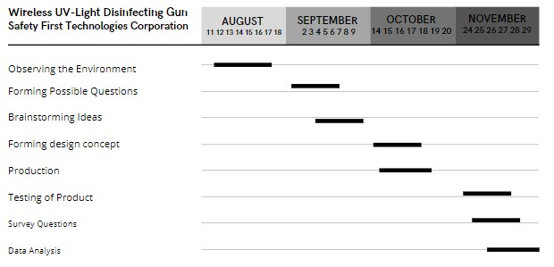

| Home | Product Details | Patent Page | Problems Encountered | Solutions | Phases Page | Users Acceptable Page | About the Founder |
Timeline of Development of the Product

Based on the Gantt Chart, the product had took four months to develop.
The team conducted first an observation from to an environment to know
what would be health risk that may happen. Forming possible questions happened
after the observation method while other teams produced ideas on what kind of
product would be build, constructing of concept was conducted on what design would
be compatible and what kind of materials would be used. after that the production of
the disinfecting gun started that took four days. The product was tested and the survey questions
were given to the respondents. after data collecting, the next step is analyzing the collected data.